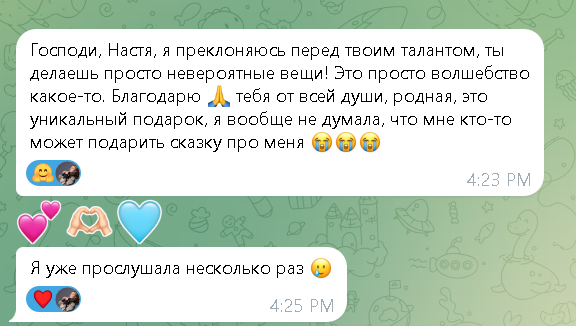
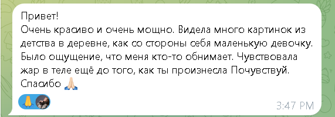
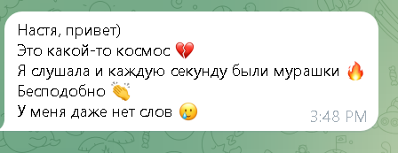

«Это просто волшебство»
Стихотворный текст, голос и музыка — созданные из твоего запроса, только для тебя
«Каждая медитация рождается один раз и не повторяется»
Более 50 женщин уже получили свою практику
Я — Анастасия Цветкова, и я создаю стихотворные медитации и сказки под личный запрос. Через рифму, голос, музыку и образы я бережно прикасаюсь к твоему состоянию — и создаю живое послание, которое рождается именно из тебя.
Это не шаблон и не универсальная практика. Я не использую готовые тексты и не повторяю одно и то же дважды. Каждая работа — это отдельный маленький мир, который появляется однажды и существует только для тебя.
Это персональная аудиопрактика, в которой твой запрос превращается в стихотворный текст, голос, музыку и образы. Через ритм, повтор и мягкие образы практика помогает замедлиться, услышать себя и бережно прикоснуться к тому, что внутри давно просит внимания.
Рифмованный текст, созданный из твоего запроса и внутренних образов
Живая история, в которой ты — главная героиня своего внутреннего пути
Голос и музыкальное сопровождение, которое усиливает погружение
Вот как это может звучать
«Видимость»
Фрагмент из реальной медитации
«Внутри что-то сдвинулось, а слов ещё нет»
«Хочется плакать — и не знаешь почему»
«Детство вдруг напомнило о себе»
«Устала быть сильной»
«Хочется, чтобы кто-то просто был рядом»
«Тело говорит раньше, чем голова»
Стихотворный текст, который можно перечитывать
Живое голосовое звучание твоей практики
Мягкая музыка, которая усиливает погружение
История, созданная из твоих образов и запроса
Визуальный образ твоей практики
Голосовое сообщение, разбор ощущений и живой отклик в Telegram
В своём темпе, честно, слушая внутренний голос. Не нужно отвечать идеально — важно отвечать искренне.
Бережно и внимательно, вчитываясь между строк.
Из твоих слов, образов, детских воспоминаний и желаемого состояния.
Голосом и с музыкой — так, чтобы это было глубоко и трансформационно.
И можешь слушать её снова и снова — как личное письмо.
«Обычно создание занимает от 3 до 7 дней»
← листай, чтобы увидеть все отзывы →

«Это просто волшебство»

«Ты попала в самую суть»

«Как будто меня кто-то обнимает»
Стоимость мы обсуждаем в личном разговоре — напиши мне в Telegram, и я расскажу подробнее. Для меня важно, чтобы обмен был живым, честным и бережным для обеих сторон.
Написать в Telegram✦
Стихотворная медитация и сказка — это бережная творческая практика самоподдержки и внутреннего диалога. Она не заменяет психотерапию, медицинскую или кризисную помощь. Если тебе сейчас нужна такая поддержка — я рада, что ты это знаешь о себе.
Да, конечно. Можно выбрать один формат или оба — в зависимости от того, что тебе сейчас ближе и что больше откликается.
Обычно от 3 до 7 дней после заполнения анкеты. Я напишу тебе, как только практика будет готова.
Да, если так тебе живее и проще — голосовые или видеосообщения приветствуются.
Можешь написать мне в Telegram — поделиться ощущениями, задать вопрос. Я отвечу голосовым сообщением и буду рядом.
Нет. Я не использую шаблоны. Каждая практика создаётся один раз — только для тебя, только из твоего запроса.
Заполни анкету в своём темпе. Без спешки, без правильных ответов.
Пусть это уже станет первым мягким шагом к себе.
Обнимаю Душой. Анастасия Цветкова